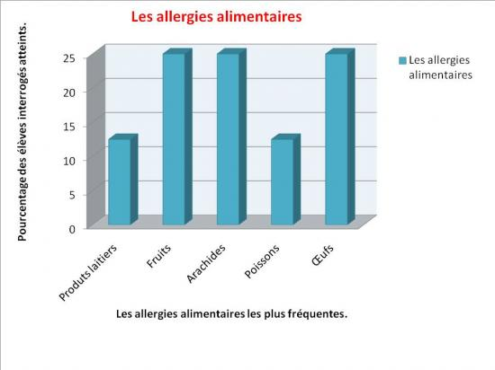
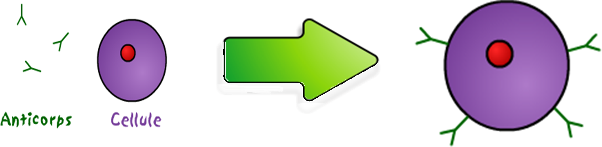
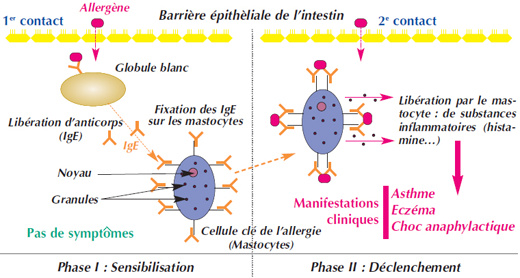

TPE réalisé par Paul, Denis et Alan en 623
I.Définition et explication des réactions allergiques
Qu’est qu’une allergie ?
Par définition, une allergie est une réaction immunologique de notre corps contre des substances étrangère appelés antigènes ou, plus précisément dans le cas d’une allergie, allergènes.
L’allergie est donc une maladie globale qui provoque des symptômes variés tels que : l’asthme, la conjonctivite, l’eczéma, l'urticaire ou bien le choc allergique. Les trois allergies alimentaires les plus fréquentes sont celles au fruits, aux arachides et aux oeufs :

Revenons aux antigènes, ils sont donc des substances étrangères à notre organisme qui étant reconnus comme externes et dangereuses, sont capable de déclencher des réactions immunologiques. Ils sont présents dans les virus, les bactéries et tout autre corps étranger.
Cette réaction se traduit par une production d’anticorps spécifiques de l’allergie : les IgE suite à une “rencontre” entre organisme et allergène par ingestion, par inhalation ou par contact cutané.
Les IgE ou Immunoglobulines E sont des protéines produitent par le système immunitaire dans les lymphocytes B ( les lymphocytes sont des cellules de l’organisme, de la famille des leucocyte ou globule blanc) ou plus précisément dans une cellule dérivée : les plasmocytes. Elles sont appelées des anticorps. Il existe 5 types d’anticorps dans l’organisme ayant tous une utilité est une localisation différente. Le rôle de nos IgE est d’apprendre à reconnaître un antigène (sachant qu’un IgE ne pourra identifier qu’un seul antigène) puis de se lier à un mastocyte.

L’allergie se manifeste lors de la seconde rencontre entre l’organisme et les allergènes. En effet, lors de la première rencontre, l’organisme se “sensibilise” juste, c’est-à-dire, les globules blancs libère les fameux IgE et ces mêmes IgE vont se fixer aux mastocytes.Or, lors du deuxième contact les mastocytes sont “équipés” de leurs Ige et peuvent alors détecter les antigène. Lors de la détection d’un antigène, les mastocytes opèrent à un procédé dit de dégranulation. Ils libèrent dans l’organisme des granules contenant des substances inflammatoires, tel que l’histamine, ayant pour manifestation clinique les différents symptômes cité en début de partie. Cette réaction peut-être résumée par le schéma suivant:

Un allergique reste en bonne santé tant que son système immunitaire n’est pas mis en contact avec l’un ou plusieurs des allergènes qu’il n’arrive pas à gérer. Pour résumer les principaux points de la réaction allergique, nous vous conseillons la vidéo de l'institut Pasteur sur le sujet qui nous a nous même permis de débuter la compréhension de ce sujet complexe :
Quand se déclenche une allergie?
Une allergie peut se déclencher à tout âge depuis la naissance jusqu'à la mort cependant la majorité des allergies se déclare dès l’enfance. Tout le monde peut être atteint d’allergie mais certaines personnes ont plus de risque: elles sont atopiques. Cela concerne principalement les enfants de personnes allergiques. En effet d'après l’AFPRAL, si les deux parents sont allergiques l’enfant à 80 % de risque d’être allergique et s’ il n’a qu’un seul parent atteint, il à 50 % de risque d’être allergique.
Guérir d’une allergie?
Le moyen le plus simple est l’éviction, c’est-à-dire supprimer de son alimentation toute trace de substance contenant l'allergène. Plusieurs types de médicament peuvent atténuer et stopper les réaction lié à une allergie tels que les antihistaminique, les corticoide, les bronchodilatateurs et l'adrénaline. Il est possible depuis quelque année d'amener l’organisme à tolérer de nouveau l'allergène mais seulement en petite quantité. Cette technique appelée désensibilisation consiste à réintégrer petit à petit l’aliment jusqu’à un seuil de sécurité. Seulement la désensibilisation ne peut être proposé qu'à des allergiques dont l’allergie est déjà à un niveau dit “faible” et n’est pas toujours couronnée de succès. Nous avons pu interroger un médecin généraliste sur ce sujet (Docteur André Wodarczak). Nous lui avons tout d’abord demandé si la technique de désensibilisation avait réellement les effets attendus. Sa réponse a confirmé nos informations trouvées sur internet. Il a dit nous a dit, “la désensibilisation n’est pas fiable à 100% comme tous les autres traitements mais reste une solution viable pour les malades”. Nous lui avons ensuite demandé - suite à une découverte sur internet montrant qu’ une allergie pouvait disparaître d’elle-même- s’ il avait constaté des “disparitions” subite d’allergie. A cela il a répondu que, pour des cas anecdotique, cela pouvait arriver et notamment pour des femmes enceintes. Comme nous étions intrigué, il nous a expliqué que comme les femmes portant un enfant devaient accueillir un corps étranger (50% d’elle/ 50% du papa) leurs systèmes immunitaires se “relâchent” afin de ne pas rejeter l’embryon et peuvent au passage “oublier” un allergène. On aussi pu observer qu'à l’adolescence, période ou beaucoup de changement corporel ont lieu, il arrive qu'une allergie disparaisse mais cela reste anecdotique et notre médecin n’a pas encore constaté ce genre de disparition chez un adolescent. Enfin des “écoles” d’allergies sont créées dans certains hôpitaux comme celui de trousseau à Paris et permettent aux enfants malade -à partir de 5ans- de se sensibiliser aux risques qu’ils courent.
II.L’allergie au gluten
Tout d’abord qu’est-ce que le gluten?
Le gluten* est une protéine présente dans toute les céréales tel que l’avoine, l’orge, le seigle ou plus commune le blé. Cette protéine a un rôle très important dans la fabrication du pain ou des gâteaux. En effet suite à la production de gaz carbonique par la décomposition de l’amidon, la pâte du pain gonfle et c’est la que le gluten sert, il permet à la pâte d'être élastique est donc de ne pas se déchirer et de gonfler pouvant ainsi doubler voir tripler de taille.
En cas de sensibilité au gluten, ce sont ces protéines -qui sont des antigènes- qui déclenche la réaction allergique. L’allergie au gluten est une pathologie plutôt rare mais facile à diagnostiquer. Elle est toutefois dangereuse car elle déclenche des problèmes respiratoires et digestifs pouvant aller jusqu'à des œdèmes. Si l'allergie au gluten est rare, le gluten provoque d’autre probleme comme l’intolérance au gluten ou maladie coeliaque. Les patients atteint de la maladie coeliaque ont des difficultés à dégrader le gluten. Les reste de cette dégradation incomplète vont déclencher, au niveau de leur intestin, une réaction inflammatoire. Le système immunitaire va produire des anticorps (IgA, IgG), ces anticorps -différent des IgE de l’allergie- vont avoir pour effet de désorganiser le fonctionnement de certaines cellules intestinales et leurs structure. Parmi ces cellules, les villosités intestinales, responsable de l'absorption des nutriments. De fait, les personnes dont les villosités ont étés atrophiées peuvent développer des carences en protéines, vitamines ou minéraux du à la mauvaise absorption de la nourriture. Mais la maladies coeliaque est très dure à diagnostiquer de par ses multiples symptômes (cf:tableau). Ainsi on estime que 0.7% à 2% de la population est malade en Europe, aux États-Unis, en Afrique du Nord, au Moyen-Orient et en Inde mais cette estimation est peu précise car la maladie coeliaque est mal diagnostiquée et présente des formes avec très peu ou pas de symptôme.
D’après l’interview du docteur Wlodarczak, le nombre de patients atteints ne cesse d’augmenter. Il existe plusieurs raison à cela, tout premièrement l’introduction du gluten dans certaines régions ainsi que les modification des taux de gluten dans les céréales pour les rendre plus facile à manier dans l’industrie agro-alimentaire.
Dans les deux cas (allergie et intolérance) les céréales à bannir sont les mêmes. Mais dans le cas de l'intolérance, certains cas de malade peuvent tolérer une petite quantité de gluten. Dans tous les cas, allergique ou non, tout médecin vous recommandera de ne pas en abuser car le gluten augmente de toute façon la perméabilité intestinale!
Une question se pose à la fin de ces deux parties : Mais du coup les allergiques sont condamnés à ne manger que de la nourriture ayant mauvais goût ou avec une sale tête ? Nous nous y pencherons dans notre troisième partie.